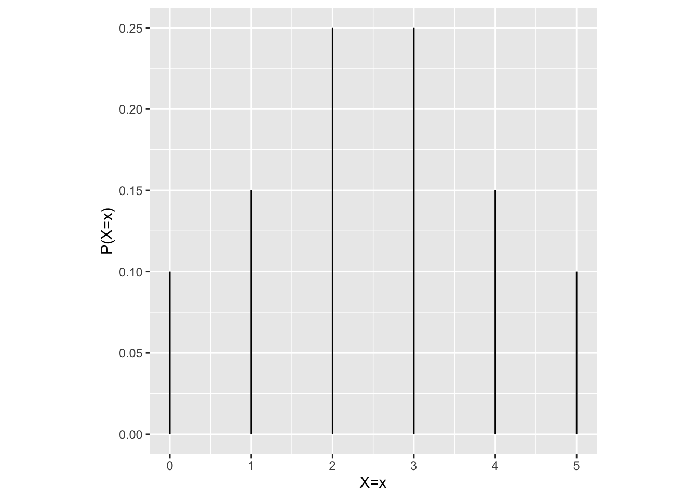
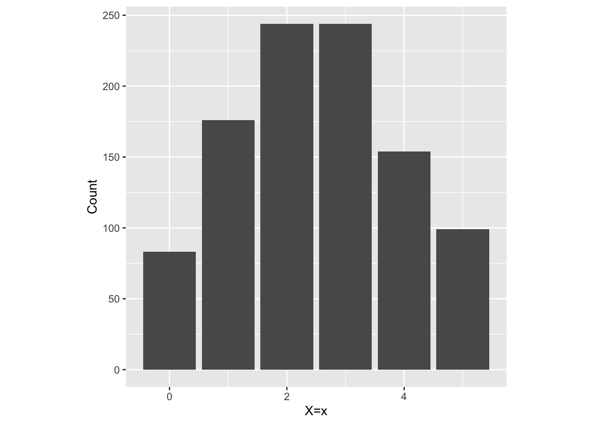
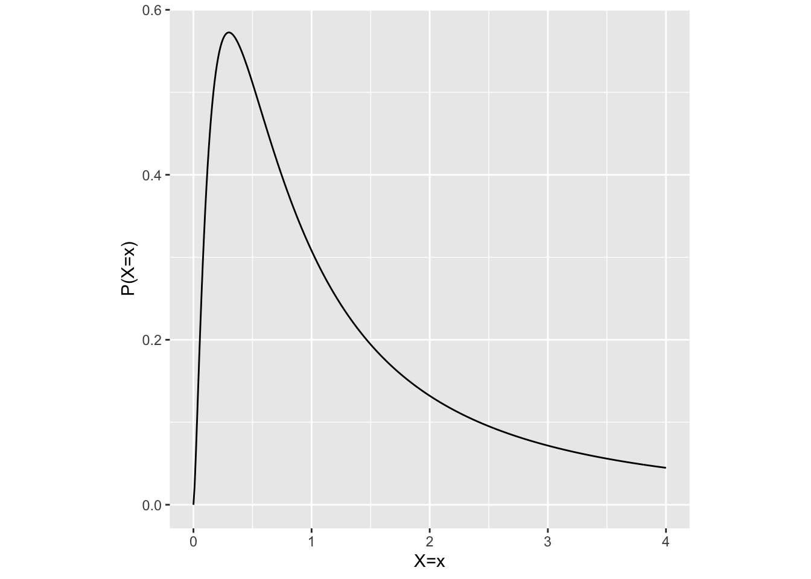
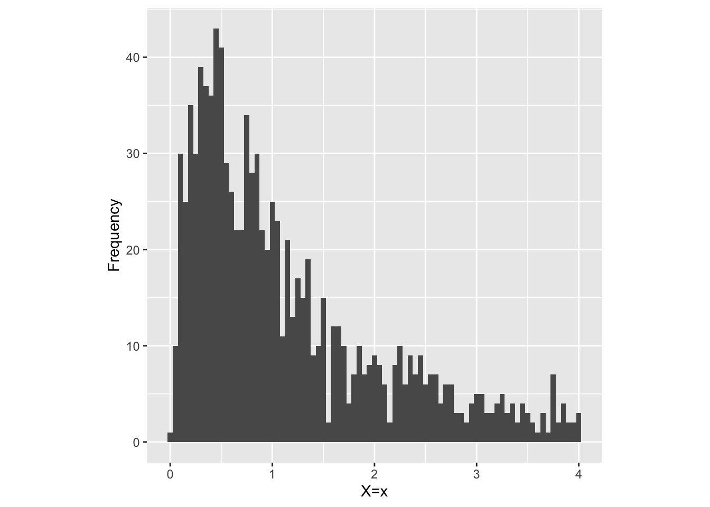
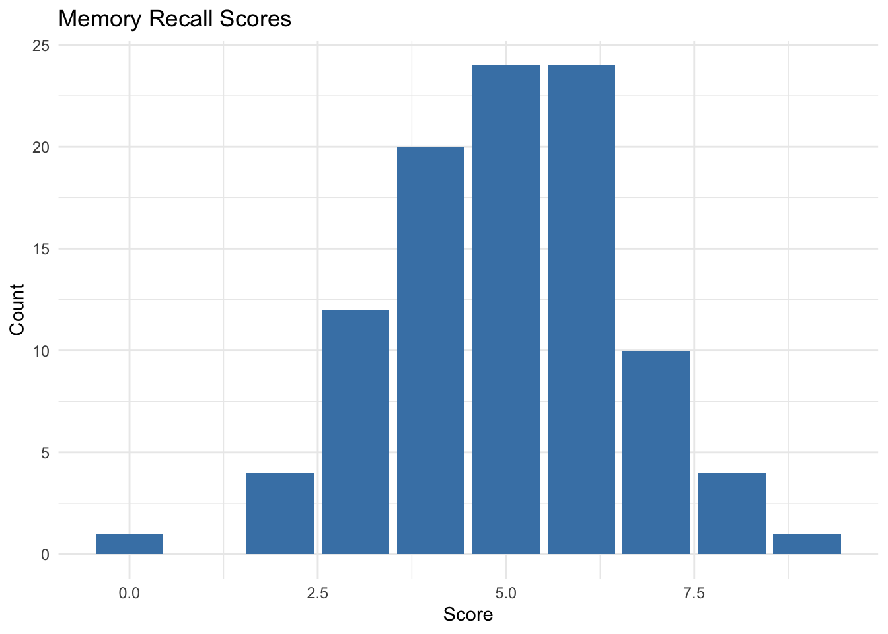

6 Random variables
My undergraduate degree is in physics. Often, when this comes up in conversation others have commented what a large jump it must have been to go from physics to cognitive neuroscience. I can definitely understand where this feeling must come from, but my experience of the transition has been only a very minor gaps. Ultimately we are all scientists, and as such, our primary objective is to uncover and understand the underlying processes that govern the physical universe.
Physicists are often equipped with one or many very good mathemtical descriptions of the universe. In fact, the physicist is very lucky becuase these mathematical descriptions don’t just describe the observations that have already been obtained about our universe, but they go even farther by specifying a process that could have generated those observations. By specifiying a process, these descriptions generate predictions about the outcomes of future experiments. So you can see that these descriptions are actually theories of the laws of physics.
We cognitive neuroscientists are in the same boat but the physisict is far luckier than us in at least one respect. The systems they study are in many cases far simpler to describe then the behaviour of the human nervous system. Where the phenomena they seek to describe are amenable to fine print descirptions of process, we cognitive neuroscientists are often left much more in the dark. This doesn’t mean that we give up. It just means that we have to rely more heavily on statistical thinking than our physicist counterparts.
The key idea I would like you to take away from these ramblings is that every time you perform a statistical test (e.g., t-test, ANOVA, regression, etc.) you are in principle building and testing a potential model of the universe. It’s not as deep as the models physicists get to play with becuase a statistical model doesn’t specifiy the process through which observations are generated. Instead, a statistical model simply specifies the outcomes that you are likely to observe if a particular model is true. Or conversely, it can tell you how likely a particular set of observations was to come from a particular model. The idea is that by doing very careful statistical thinking, we will be able to narrow down our understanding of the sort of outcomes that characterise our little sub-area of cognitive neuroscience, and this will eventually enable us to build models that do specify process as our physicist colleagues enjoy.
At the heart a statistical model is the concept of a random variable. You need to think a little bit abstractly to really understand what a random variable is. It is tempting to think of a random variable as a single number than is somehow randomly chosen. Or perhaps your intuition tells that a random variable is somehow something that you can hold in your hands or know directly. Unfortunately, these intuitions are not quite right. Rather, a random variable is a process that generates data. It is therefore conceptually tied to the laws that govern the physical universe themselves and also to the speciifc details of the experiment that the data was collected from. because all data that we might ever observe will be subject to these laws. The connectino to the specific experiment comes from the fact it is the details of our experiment that dictates what exactly we measure.
6.1 Defining traits of random variables
Population and Sample space: The entire set of things under study is a population . Here, a “thing” can be just about anything. It can refer to people with a specific demographic, neurons in a particular part of the primate brain, or even the possible outcomes of a partciular experiment. A population can be finite or infinite, and it can be discrete or continuous (more on these terms soon). Generally, when we conduct a study, the population is what we aim to learn something about.
A sample space is the set of all possible outcomes of an experiment. For instance, the sample space of a coin toss is \({Heads, Tails}\), the sample space for rolling a six-sided die is \(\{1, 2, 3, 4, 5, 6\}\), and the sample space of both tossing a coin and rolling a die is \(\{H1, H2, H3, H4, H5, H6, T1, T2, T3, T4, T5, T6\}\). But like populations, sample spaces can be finite or infinite, and continuous or discrete.
Populations and sample spaces are clearly quite similar but there are some graspable distinctions. In particular, a popoulation isn’t tied very strongly to a particular experiment whereas a sample space is.
Probability distribution: A function that assigns a probability to each possible outcome in the sample space. Every random variable is in essence defined by its probability distribution. This makes probability distributions one of most important concepts in statistics. Since we use random variables as our models of the brain universe, and every random variable is defined by its probability distribution, it follows that probability distributions are the things that allow us to make predictions about the outcomes of future experiments.
Sometimes we won’t be in a very good position to know or observe the entire probability distribution of a random variable so we might instead attempt to work with only pieces of the distribution. For example, we might focus on the central tendency of the distribution (i.e. ,what observations does it produce the most of), or the spread of the distribution (i.e., how much do the observations vary).
Both of the defining traits I’ve emphasised above require further explanation to be fully understood. We will need to build a solid understanding of what it means for a population or a sample space to be infinite vs finite; what it means for it to be continuous vs discrete; and how to go about specifying a probability distribution. These topcis will lead us down the road of probability theory and experiment design.
6.2 Continuous vs discrete
The data that random variables produce can be either discrete or continuous. In a rather straight-forward use of terms, a random variable that produces discrete data is called a discrete random variable and a random variable that produces continuous data is called a continuous random variable.
For example, consider the random variable \(X\) defined as a process that returns the body lengths in cm of rats drawn from a population defined as all rats in the universe. The sample space for this random variable is all real numbers greater than zero.
A sample from this random variable might look as follows: \[ \boldsymbol{x} = (2.877970, 7.497241, 5.455286, 4.903578, 7.806955) \] Here, \(X\) is a continuous random variable because it seems that any value greater than zero can be obtained when sampling from it.
As another example, consider the random variable \(X\) defined as a process that returns the number of neurons in a rat cerebral cortex drawn from the same population as in the previous example. A sample from this random variable might look as follows: \[ \boldsymbol{x} = (21e6, 21e6, 18e6, 20e6, 22e6) \] Here, \(X\) is a discrete random variable because that only integer values can be obtained when sampling from it.
As a third example, we might perform an experiment where we observe a rat navigate a maze several times, and measure the time to completion for each maze run. Suppose that we observed 10 runs with the following times in seconds: \[ \boldsymbol{x} = (52.38, 55.41, 70.88, 43.30, 50.15, 41.99, 36.82, 34.05, 52.70, 72.25) \] Here, \(X\) is a again a continuous random variable because time can take any real number value.
However, if instead of measuring time, we measured the number of turns the rat took to complete the maze, then our sample might look like this: \[ \boldsymbol{x} = (8, 2, 10, 7, 3, 1, 6, 9, 5, 4) \] Here, \(X\) is a discrete random variable.
In summary, continuous random variables produce continuous data and discrete random variables produce discrete data. Continuous data can take any real number value, while discrete data can only take a discrete set of values.
6.3 Finite vs Infinite
Populations and sample spaces can be composed of either finite or infinite sets. In another rather staight-forward use of terms, they are finite if they contain a finite number of things and they are called infinite if they contain an infinite number of things.
For example, the population of all neurons in a particular human brain is finite because – while there are certainly a lot of them – their number is finite. As a more tradtiional example, the sample space of rolling a six-sided die is finite, consisting of just six possible outcomes: {1, 2, 3, 4, 5, 6}.
In contrast, the population of times a specific neuron generates an action potential after stimulus onset is infinite. To see this consider simply consider the number of possible times that exist between 1.0 and 1.1 seconds. It could be 1.01, 1.001, 1.0001, and so on. No matter how small you make an increment, you can always make another increment smaller than the last. This leads to infinity.
6.4 Sampling from random variables
When we run an experiment and gather data we say that we are sampling or that we are drawing samples from the random variable that generates data in our experiment.
Suppose we have a two electrodes implanted in a brain – one in region A and another in region B – and we want to know if region A causes firing in region B. Our approach is to inject some excitatory current into region A and measure the effect on the firing rate of region B. In principle, if we observe more spike in region B when we inject current in region A, then we have evidence that region A drives region B. However, there’s a bit of a problem. Region B has some baseline firing rate that is not zero. So, if we observe spikes in region B, we can’t be sure if they were caused by the current we injected into region A or if they were just spontaneous spikes. We need to somehow determine if the spikes in region B are more than we would expect by chance.
Our approach is to use a random variable \(X\) to model the number spikes would expect to see in region B during region A stimulation. That is, \(X\) is the process that generates the number of spikes we observe in region B during region A stimulation. In this case, the sample space of \(X\) is composed of all possible number of spikes we might observe in our experiment, \({0, 1, 2, 3, ... }\). That we can figure out just by thinking about it. But what we really want to know is the probabily distribution of \(X\). In eseence, this would allow us to say whether or not \(X\) is more likely to generate a spike (or gennerate more spikes) during the stimulation of region A. This probability distribution is set by the universe and we unfortunately cannot know it just by thinking about it. The best we can do is run our experiment and try to use the data that we get to make a best guess about what we think this probability distribution is.
This last sentence is very important. We run our experiemnt and get some data. That is, we obtain samples from our random variable. We then must use these samples to make a good guess about the probability distributino of random variable that gave us the data in the first place. In essence, we use samples to estimate properties of random variables.
6.5 Example: Sampling from a simple discrete random variable
Consider a random variable \(X\) defined as the number of correct responses a participant gives in a short memory recall test. Suppose that in this test, participants are shown a list of five words for a brief period and then asked to recall as many words as possible after a short delay. The sample space of \(X\) is \({0, 1, 2, 3, 4, 5}\). We can see that the sample space of \(X\) is both discrete and finite.
We cannot know with 100% certainty the true probability distribition for \(X\). However, as an eaxmple, lets suppose that some higher power has given us this information and it looks as follows:

The above plot is called a probability distribution. It shows possible outcomes of the random variable \(X\) on the x-axis and the probability of each outcome on the y-axis. There are a few subtle details about this plot that we will cover in a later section. For now, lets focus on the most important aspect: The taller the bar,, the more likely the corresponding outcome is to occur. If this was the true probability distribution for \(X\), and we performed out experiment a few times, we might get:
## [1] 4 0 2 2 1Note that every time we ran our experiment we get different results. Recall that this is the essence of what it means for \(X\) to be a random variable. Also note that it is difficult to get a good sense of the overall pattern of the results by just looking at the first few. Rather, we need to look at the results of many. If we performed our experiment many times – many more times than would be conventient to print the results in line (say \(n=1000\)) – then we need a better way to visualize the results. With discrete random variables a good way to do this is to use a simple bar plot.

We can see that the most common outcomes are 2 and 3, which is what we would expect given that the peak of the probability distribution occurs at this value, but we also get many other outcomes. In general, the count of occurrences of each outcomee is about proportional to the height of the bar in the probability distribution. This is the essence of the concept of a probability distribution.
6.6 Example: Sampling from a simple continuous random variable
Consider a random variable \(X\) defined as the reaction time (in seconds) of participants in an experiment where they are asked to press a button as soon as they see a light flash on a screen. Here, \(X\) is a continuous random variable because it can take any value that is greater than zero. Of course, as an experimenter, you probably don’t want to wait around for infinity seconds for your participant to finish, so there are some practical cutoffs. Those can in principle be baked into to the analysis for now lets keep our lives simple and ignore them. Again, lets further suppose that some higher power has given us knowledge of the true probability distribution for \(X\).

There are again several important and subtle aspects of this probability distribution that we will wait until later to address. For now, lets focus on the big picture. We see that very short (close to zero) and very long reaction times are both very unlikely. We also see that the spread of possible reaction times is bunched up between zero and the peak of the disribution and that it is stretched out from the peak to the extreme long reaction times. If this was the true distribution for \(X\), and we performed our experiment many times, we might obtain the following:

We can again see that the most common outcome is near the peak of the probability distribution and that the relative frequency of each outcome is about proportional to the height of the probability distribution at the corresponding outcome.
6.7 Summary
Random variables are data generating processes defined by a probability distribution. The probability distribution specifies how likely each possible outcome is to occur. When we sample from a random variable – e.g., by performing an experiment – we obtain a set of outcomes. The relative frequency of each outcome will generally be about proportional to the height of the probability distribution at the corresponding outcome.
6.8 Using samples to estimate probability distributions
A random variable is a data generating process. You can think of it like an infinitely deep bucket full of experiment outcomes. Whenever you perform an experiment, you reach into the bucket, and pull out one outcome at random. All possible experiment outcomes contained by the bucket define the population under study, and the set of probabilities corresponding to each possible outcome is the probability distribution. Any outcome you pull out of the bucket is a sample from the random variable. In general, we use samples to estimate full probabilitiy distributions or aspects of probability distributions (e.g., their central tendancy and dispersion).
6.9 Discrete distributions
Consider an experiment where participants are shown a list of 10 words for a brief period and then asked to recall as many words as possible after a short delay. Lets define a random variable \(X\) as the number of words correctly recalled. With this definition, \(X\) can only take on integer values from 0 to 10. Suppose we have conducted the experiment with 100 participants and obtain the following sample.

The height of each bar represents the count of participants who recalled that many words. We have seen in previous sections that the count of samples at each possible outcome is about proportional to the height of the probability mass function at that outcome. This means that the bar graph we’ve just plotted can be thought of as an estimate of the probability mass function of the random variable \(X\). The main problem with this estimate is that the sum of the height of all the bars does not equal 1. To fix this, we need only to normalize the height of each bar by the total number of samples (i.e., divide each bar height by the total number of samples). After normalisation we have the following:

By using proportion instead of count we now have a valid estimate of the probability mass function of the random variable \(X\). This is a very simple example of how we can use samples to estimate probability distributions. In general, we can use the same approach to estimate any discrete probability distribution.
6.9.1 Continuous distributions
Consider an experiment where the reaction time of participants is measured in seconds as they perform a task requiring quick responses to visual stimuli. Define a random variable \(X\) as the reaction time. Here, \(X\) can take any real value between zero and infinity. Suppose we conducted the experiment with 100 participants and obtained the following sample of reaction times.
To estimate the probability distribution of \(X\) – the random variable that generated these reaction times – we use a histogram. We will also overlay a density plot to provide a smoother estimate of the distribution.
## Warning: The dot-dot notation (`..density..`) was deprecated in ggplot2 3.4.0.
## ℹ Please use `after_stat(density)` instead.
## This warning is displayed once every 8 hours.
## Call `lifecycle::last_lifecycle_warnings()` to see where this warning was generated.
The histoogram makes intuitive sense to use in this context – becuase at least given good choices for bin width and large enough sample size it ends up looking like the distributions we sample from – but it is actually a stranger fit that if first appears. This is because a histogram uses discrete bins to estimate a continuous probability distribution. This should bring you back to your introduction to calculus. In calculus, you learned that you can estimate the area under a curve by dividing the area into small rectangles and then summing the area of the rectangles. The samller the rectangles the better the estimate. A very similar mechanism is at play with a histogram.